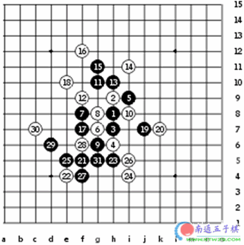

Selected Games of The World Championship, 1989
Nara - Nakamura, 1/2:1/2, 79 moves
This game was played in the 2nd round of the WC. Two strongest players showed a great battle! At first, it seemed that Nara had chosen a weak opening, allowing white (Nakamura) to get the initiative by the 12th move. However, Nara continued in very calm manner, not allowing white to dominate all the game. Move 18 seemed like an attempt to grab space for white, but from that moment Nara started a solid defense play - 19, 21, 23, and white space is not as good anymore.
By the 31st move the table had turned - now Nara had the initiative already. Being a wise player, Nara did not gamble in such situation, but kept the control over the game until the 79th move when the game ended with draw. It was a skillful play by both players.
Palmgren - Nakamura, 0:1, 36 moves
Similar games had been played already several years before WC, and the 5th move was quite popular in Japan at that time. Nakamura is one of the best experts of the 5th move in the world. Although Swedish players may have gotten some records of old Japanese games, it would not help much, because the 5th move was shifted away from traditional 5-i8, and therefore the edge distance would play an important role.
Nakamura's own style would be 15-L7, 16-m8, 17-f5. The famous "f5" point is the key of most Nakamura's attacks when Nakamura is black. Palmgren, however, chose another way to develop, using more direct style, which might not be bad at all. The mistake was the 25th move. Black played a four in the fear of overline structures. However, white cannot manipulate with overline, therefore black should have just blocked the three without using a four. That would have remained the VCT threat on the left side and white could not counter-attack on the bottom. Now that Nakamura had got the initiative, the game ended fast. Great master could do well even in very narrow space near the edge.
Nakamura - Kozhin, 1:0, 31 moves

It is a game that has its own legend. Already since the 1989 until today there are stories telling that Kozhin had a win against Nakamura in move 20. I might have been one of them who also thought so at that time. According to the legend, if white goes to 20-e12 then black has no defense. True or not?
Hard to say. Everyone can try himself - 20-e12, 21-g12, 22-g9, 23-e9. Maybe you can bring some clearing light onto that legend.
［ 有志青年 于 2008-9-5 7:21:52 时奖励此帖[金币加 20 威望加1］
已修正
 。。。英文版的撒。。。。
。。。英文版的撒。。。。